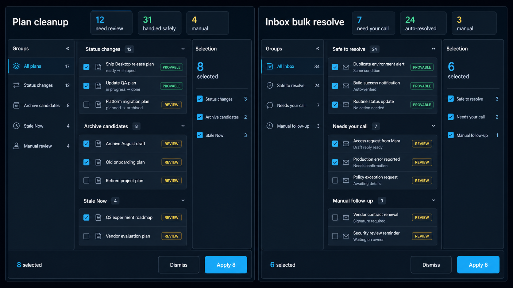
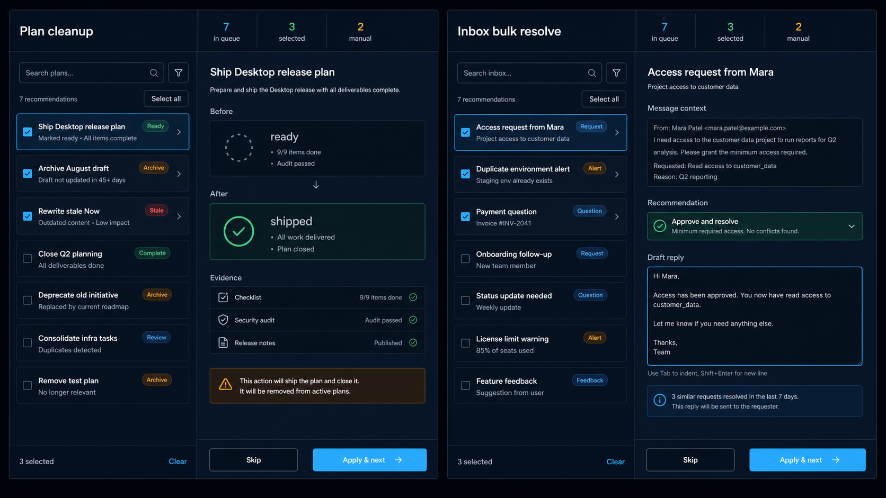
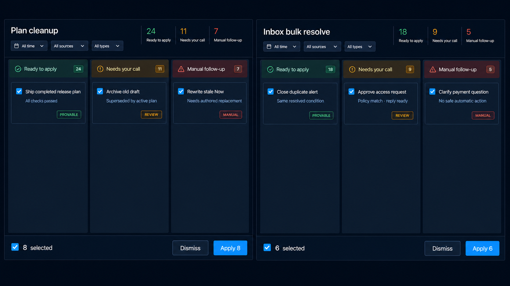

01 · Guided command center Scan at volume with group navigation, central review lists, selection summaries, and persistent actions. Recommended base  Best shared shell for both flows.
02 · Focused decision desk Work one item at a time while keeping the queue visible; richer evidence and an editable Inbox reply stay in context. Best drill-in  Best for ambiguous or consequential recommendations.
03 · Outcome lanes Separate safe changes, owner decisions, and manual follow-up into clear triage lanes. Fastest scan  Strong overview, with more permanent horizontal space.